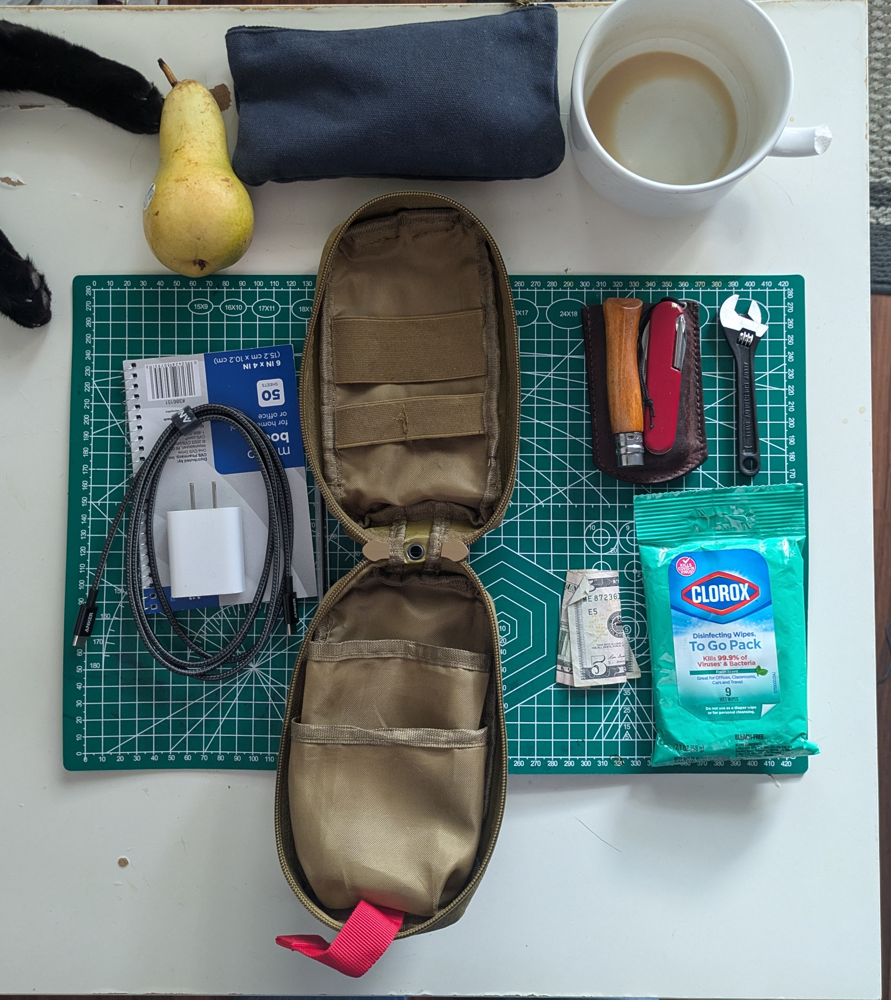
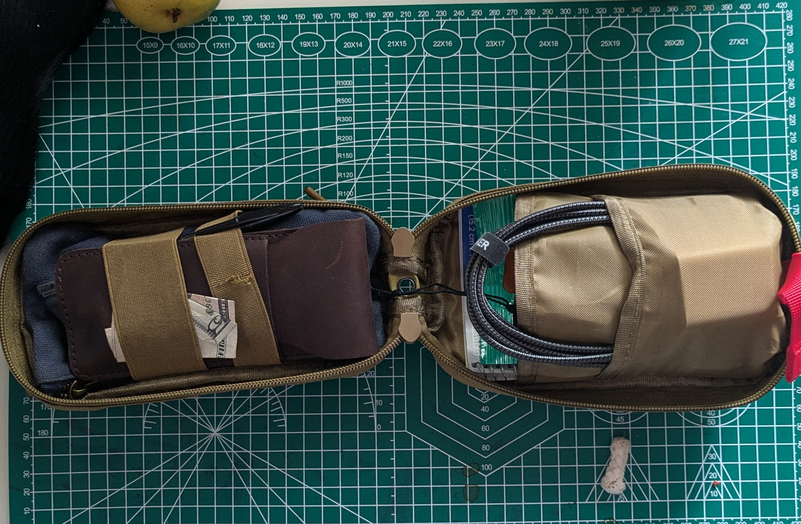

Curate an EDC Pouch
Organizing your random tools into an edc pouch
4 Minutes, 40 Seconds
2024-06-17 15:42 -0500
Why
i have a bunch of random tools and pouches laying about. I don’t like it. So to feel better i want to organize a pouch that i can throw into any of my bags so that i can deal with most things i face in day to day to life.
Guiding principles
- I want tools that reduce the friction in my average day to day dealings
- I want the pouch to be small enough to fit inside all of my bags
- I want the tool set to be modular so that it can be used as the base of other kits.
Audit your supplies
in my case I have at my disposal. I’d love to buy mores stuff, but if I am being honest with myself.. i think that i can take care of most of my needs with the things below. I will test it out and see if any new needs arise.
Supply list
- A pouch.
- Swiss army knife.
- 4 inch crescent wrench.
- Some clorox wipes.
- A bit of cash.
- A note pad.
- A pen.
- Cell phone charging block.
- USB C cable.
- A first aid kit
- Opinel no 7 Carbon Knife
- Some latex gloves

Determine every day uses
in order to carry this stuff around with me in my bag I have to justify the weiht and the space.
Justify the Pouch
the pouch is just some nylon pouch i used in the past for a trauma kit. I dismantled that because i do not really have enough experience to justify patching up some seriously injured person… nor myself. It is a pretty good size. It is small enough to fit in my sling bag and into my haversack.
Justify the Swissie
the swiss army tinker is a great little tool. I use it pretty often to help me get out of binds and to reduce friction in my daily life.
It has…
- Main knife.
- A backup knife.
- A can opener.
- A bottle opener.
- A phillips head.
- a flat head.
- An awl.
- A reamer.
- A pry bar.
- A tooth pick.
- A pin.
- Tweezers.
Justify the crescent wrench
the crescent is the only item that i purchased in this set. If I am being completely honest with myself i have yet to use it. I can foresee it being useful if i have to loosen a bolt or hold a locking nut. That said, i do not know if it will prove to as useful as i would like it to be. The 4 inch is also really small. i wonder if i should have gone with the 6 inch.
Justify the clorox wipes
i use the clorox wipes to clean off my tools and my utensils after use. i also find that many restaurants and public toilets are too dirty for me to comfortably use. the wipes are useful to me in thoe cases.
Justify the cash
a few dollars takes up no space and is useful in a bind. If it is easy to access i will use it. if it is not put away i will lose it. Sometimes i forget my wallet or card at home. it is justified.
Justify the notepad
being able to write something down to later add to note keeping application is really useful to me. Also, i like to brainstorm on paper and store digitally. the advantage of this to me is that i can keep my digital life more organized and just throw away the fragile paper.
The pen
this is justified. done.
Charging block and usb c
i try to only buy usb c electronics. Thankfully this is getting easier to do. The charging block justifies itself. So does the cable that accompanies it.
Justify the first aid and hygiene kit
this is just a basic first aid kit to cover my bases. it is not meant to be a trauma kit… nor is it expected to be all encompasing. every day needs require something that will help me to treat minor scrapes.
i think i could expand upon the hygiene kit. a toothbrush, hydrogen peroxide, tooth paste, and small cut of face soap might be good solutions to include. i’ll write another post where i expand upon this.
the first aid/hygiene contains
- band-aids.
- some gauze.
- a tick remover.
- a nail file.
- nail clippers
- immodium.
- benadryl.
Justify the opinel
i like the opinel no 7. I think at the end of the day everything comes down to whether or not i want and like it… now trying to justify my liking it.. the opinel no 7 has a slightly larger blade than the main blade of the swissie tinker. The opinel is also not threatening at all. I can use it cut an apple or eat at a restaurant without raising any eyebrows. it is also sharp enough to be capable of most “survival” tasks that i can throw at it if the occasion arises.
the carbon steel felt like a good idea initially. it is cool, but it rusts in the houston moisture. the next one i buy will definitely be stainless. Unfortunately this knife will last me the rest of my life.
Justify the latex gloves
I do not like making my hands dirty. Nor do i like touching unsanitized things. if either of those things could happen i pull on the gloves.
Put it all together
you know there really isn’t much to this one. Just put everything in the pouch in a way that is organized and not messy.

Justify missing items
i think a few key tools are missing from this set.
i would like…
- small pliers like a mini knipex.
- a lighter.
- a couple of matches.
- some soap to clean-up while out of the house.
- iodine tablets or a small vile of disinfectant bleach for dirty water.
Justify my justifications
i hinted at this earlier… every rationalization i make comes down to the fact that each choice i made in this exercise was influenced by desire to possess the object. i like being prepared. i like tools. i like ingenuity. i like it when people think that i am resourceful. my pouch is a reflection of these desires.